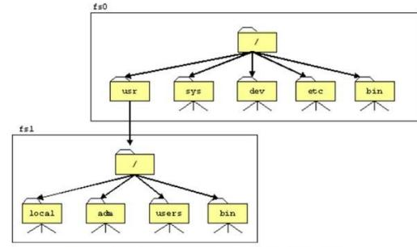
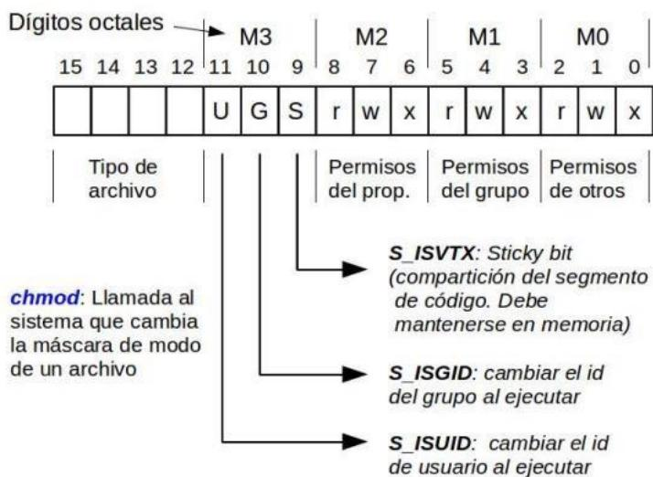
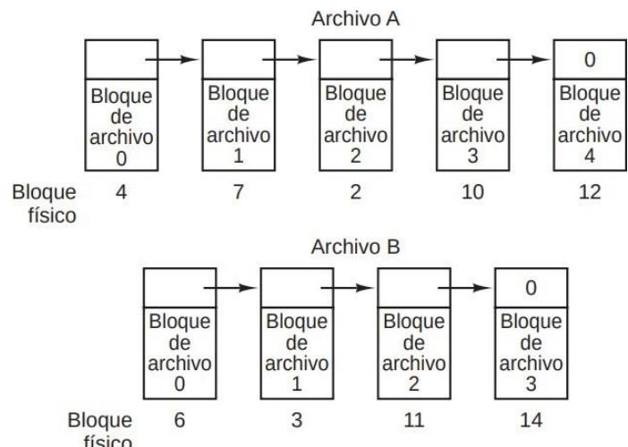
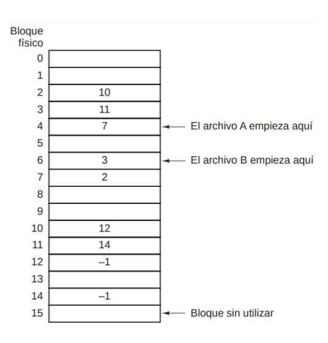
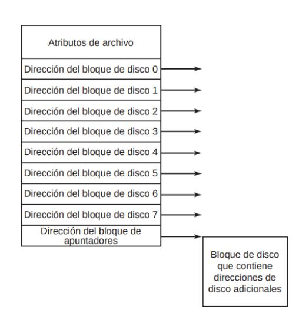
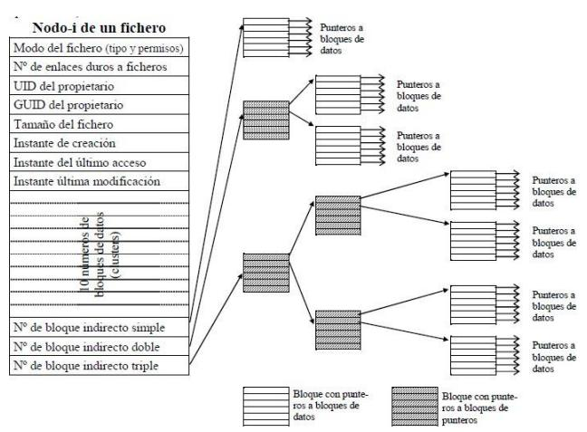
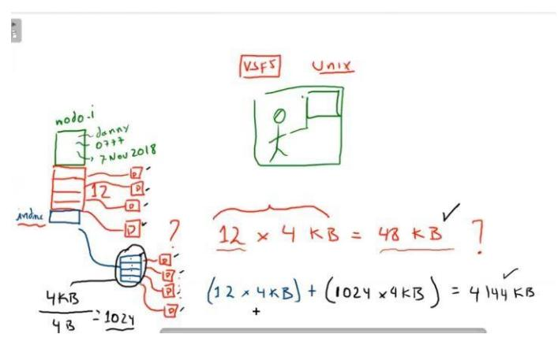
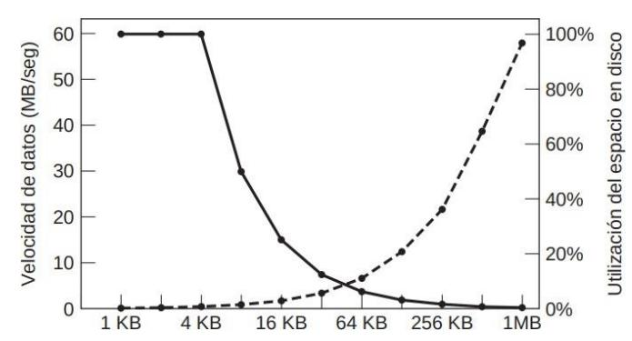
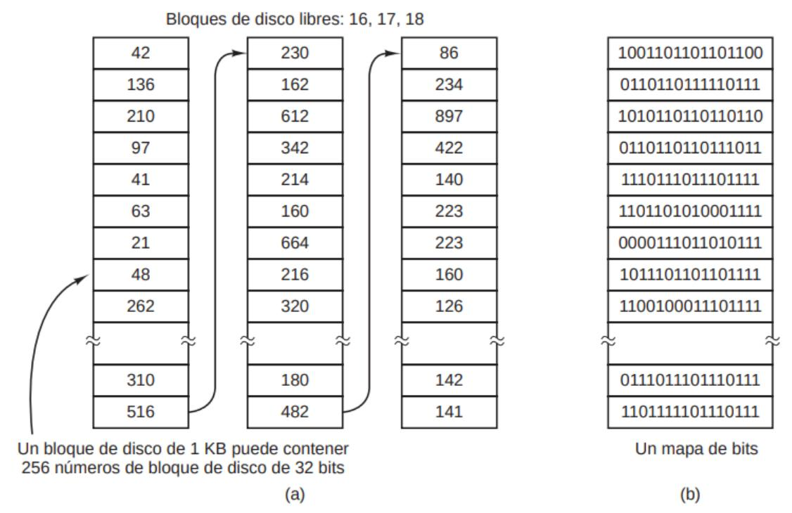

Sistema de Archivos
Escrito por Adrián Quiroga Linares.
El Sistema de Archivos – La Calma Después de la Tormenta
Una de las principales tareas del SO es crear y administrar abstracciones del disco del sistema.
4.1. Consideraciones generales
Todos los sistemas necesitan almacenar y recuperar información a largo plazo de manera que se cumplan los siguientes requisitos:
- Los procesos pueden almacenar cierta cantidad de información en su espacio de direcciones, pero de manera muy limitada.
- Debe ser posible almacenar una cantidad muy grande de información → si usásemos el espacio de direcciones, el tamaño estaría limitado.
- La información almacenada debe sobrevivir a la terminación del proceso que la utilice → si usásemos el espacio de direcciones, al terminar el proceso se perdería la información.
- Varios procesos deben poder acceder concurrentemente a la información → si usásemos el espacio de direcciones, sólo un proceso podría acceder a la información.
Como los espacios de direcciones no son viables para almacenar información a largo plazo, se usan dispositivos físicos como discos magnéticos. Por ahora, entenderemos el disco como una secuencia lineal de bloques de tamaño fijo que admiten únicamente dos operaciones, leer y escribir. Esto plantea varios problemas: ¿cómo se busca información? ¿cómo se sabe qué bloques están libres?...
El ARCHIVO es una abstracción que realiza el SO de los dispositivos físicos de almacenamiento. Son unidades lógicas de información creadas por los procesos. Los procesos pueden leer los archivos existentes y crear otros si es necesario. La información que se almacena en los archivos debe ser persistente, es decir, sobrevivir a la terminación de los procesos. Un archivo debe desaparecer solo cuando un proceso autorizado (por ejemplo, su dueño) lo elimina.
Los archivos son administrados por una parte del SO denominada SISTEMA DE ARCHIVOS.
- Desde el punto de vista del usuario, lo más importante del sistema de archivos es su apariencia (cómo se estructuran los archivos, cómo se llaman, cómo se opera con ellos, etc.).
- Desde el punto de vista del diseñador del SO, lo más importante del sistema de archivos son detalles sobre su implementación (listas enlazadas, mapas de bits, etc.).
4.1.1. Comparación entre disco físico y disco lógico.
Un disco físico es un dispositivo periférico de E/S para el almacenamiento permanente de datos. Se trata de un dispositivo modo bloque, que contiene un array de bloques de tamaño fijo. Cada uno de estos bloques posee un número identificativo denominado número de bloque físico.
Un disco lógico es una abstracción del hardware que el sistema operativo ve como una secuencia lineal de bloques de tamaño fijo accesibles aleatoriamente. Cada bloque de un disco lógico tiene asignado un número identificativo denominado número de bloque lógico. El driver o manejador del disco entre otras tareas se encarga de traducir los números de bloques lógicos a números de bloques físicos.
Normalmente, el disco físico se divide en varias PARTICIONES contiguas independientes, de manera que cada una de ellas puede actuar como disco lógico. Es responsabilidad del administrador del sistema decidir qué va a contener en cada una de ellas. Permiten que convivan varios SOs en un único disco, de manera que a cada uno de ellos se le asigna una partición. La partición activa será aquella en la que se busca el SO en el momento del arranque de la máquina.
Cada sistema de archivos se encuentra contenido por completo en un disco lógico y un disco lógico puede contener un único sistema de archivos. Algunos discos lógicos, en vez de contener un sistema de archivos, son usados como el área de swapping de la memoria principal (en otros sistemas se usa una partición dedicada para esto).
En los sistemas modernos, varios discos físicos o particiones de distintos discos pueden combinarse en un único disco lógico para que soporte sistemas de archivos más grandes.
4.1.2. Montaje de Sistemas de Archivos.
Aunque la jerarquía de archivos de UNIX parece monolítica, se puede tener varios subárboles independientes, cada uno de los cuales puede contener un sistema de archivos completo. Un sistema de archivos se configura para ser el sistema de archivos raíz, y para que su directorio raíz sea el directorio raíz del sistema. Los otros sistemas de archivos son adjuntados a la nueva estructura montando cada nuevo sistema de archivos dentro de un directorio del árbol ya existente, al

que se le denominará directorio de montaje o punto de montaje.
El montaje de sistemas de archivos permite ocultar al usuario los detalles de la organización del almacenamiento, pues el espacio de nombres de archivos será homogéneo, es decir, no habrá que especificar la unidad del disco como parte del nombre del archivo.
Normalmente los sistemas de archivos que usa el sistema no están cambiando frecuentemente. Entonces el núcleo usará una TABLA DE MONTAJE (normalmente en etc/mtab) para identificar los sitemas de ficheros que debe montar al arrancar la
| # device | directory | type | options |
|---|---|---|---|
| /dev/hda1 | / | ext2 | defaults |
| /dev/hda2 | /usr | ext2 | defaults |
| /dev/hda3 | none | swap | SW |
| /dev/sda1 | /dosc | msdos | defaults |
| /proc | /proc | proc | none |
máquina. Cada una de las lñineas de esa tabla conteine la infomación sobre uno de los sistemas a montar: dispositivo que se monta, directorio de montaje, tipo de sistema de archivos montado y opciones de montaje.
4.1.2. Llamadas al sistema y comandos asociados
La llamada al sistema mount permite montar un sistema de archivos desde un programa.
resultado = mount(dispositivo,dir,flags);
donde dispositivo es la ruta de acceso del archivo del dispositivo del disco donde se encuentra el sistema de archivos que se va a montar, dir es la ruta de acceso del directorio sobre el que se va a montar el sistema de archivos, y flags es una máscara de bits que permite especificar diferentes opciones. Si la llamada se ejecuta con éxito en resultado se almacena el valor 0. En caso contrario, se almacena el valor -1. Cuando un sistema de archivos deja de ser utilizado, puede ser desmontado.
resultado = umount(dispositivo);
donde dispositivo es la ruta de acceso del archivo del dispositivo que da acceso al sistema de archivos que se desea desmontar. Las llamadas mount y umount no actualizan el archivo /etc/mtab, que contiene la tabla de montaje. Por lo tanto, si se decide montar un sistema de archivos desde un programa, habrá que actualizar también desde dicho programa el archivo /etc/mtab.
Por ejemplo, la llamada al sistema mount("/dev/hda2","/usr",0); monta la partición 2 del disco duro sobre el directorio /usr, el sistema se monta en modo lectura/escritura. La llamada al sistema umount("/dev/hda2"); desmonta la partición 2 del disco duro.
4.1.3. Archivos desde el punto de vista del usuario.
4.1.3.1 Máscara de Modo.
Cada archivo en un sistema tiene asociada una máscara de 16 bits conocida como máscara de modo, la cual define sus permisos y tipo. Esta máscara se organiza en diferentes secciones: los bits más altos identifican el tipo de archivo, seguidos por los permisos del propietario, los permisos del grupo y, finalmente, los permisos para otros usuarios. Además, existen bits especiales como el S_ISVTX (sticky bit), que permite compartir segmentos de código en memoria, el S_ISGID, que cambia el ID de grupo al ejecutar, y el S_ISUID, que cambia el ID de usuario al ejecutar. La

máscara puede modificarse mediante llamadas al sistema como chmod.
4.1.3.1 Llamadas al sistema para operar con archivos
(, , ) → abre un archivo para lectura, escritura o ambos y devuelve su descriptor de archivo. Se puede hacer que, si el archivo no existe, lo cree.
() → cierra un archivo.
(, , ) → lee datos de un archivo.
(, , ) → escribe datos en un archivo.
(, , ℎ) → desplaza el puntero de un archivo.
(, ) → obtiene información sobre un archivo.
ℎ(, ) → cambia la máscara de modo de un archivo.
(_, _) → renombra un archivo
4.1.3.1 Directorios.
Los DIRECTORIOS o carpetas son los contenedores de los archivos, que se usan para agrupar archivos relacionados de manera natural. Muchas veces, los directorios serán archivos a su vez. El sistema de archivos se organiza en una jerarquía en forma de árbol de directorios.
Cuando el sistema de archivos está organizado como un árbol de directorios, se necesita cierta forma de especificar los nombres de los archivos. Por lo general se utilizan dos métodos distintos. En el primer método, cada archivo recibe un nombre de ruta absoluto que consiste en la ruta desde el directorio raíz al archivo. Sin importar cuál carácter se utilice, si el primer carácter del nombre de la ruta es el separador, entonces la ruta es absoluta. El otro tipo de nombre es el nombre de ruta relativa. Éste se utiliza en conjunto con el concepto del directorio de trabajo (también llamado directorio actual).
La mayoría de los sistemas operativos que proporcionan un sistema de directorios jerárquico tienen dos entradas especiales en cada
directorio: "." y "..", que por lo general se pronuncian "punto" y "puntopunto". Punto se refiere al directorio actual; puntopunto se refiere a su padre (excepto en el directorio raíz, donde se refiere a sí mismo).
4.2. Identificadores de usuario y grupo
Puesto que UNIX es un sistema multiusuario, el sistema operativo asocia a cada proceso dos identificadores enteros positivos de usuario y dos identificadores enteros positivos de grupo. Los identificadores de usuario son el identificador de usuario real, uid, y el identificador de usuario efectivo, euid. Mientras que, para el grupo se tiene el identificador del grupo real, gid, y el identificador de grupo efectivo, egid.
El uid identifica al usuario que es responsable de la ejecución del proceso y el gid identifica al grupo al cual pertenece dicho usuario. El euid se utiliza, principalmente, para determinar el propietario de los ficheros recién creados, para permitir el acceso a los ficheros de otros usuarios y para comprobar los permisos para enviar señales a otros procesos. El uso del egid es similar al del euid pero desde el punto de vista del grupo.
Usualmente, el uid y el euid van a coincidir, pero si un usuario U1 ejecuta un programa P que pertenece a otro usuario U2 y que tiene activo el bit S_ISUID entonces el proceso asociado a la ejecución de P por parte de U1 va a cambiar su euid y va a tomar el valor del uid del usuario U2. Es decir, a efectos de comprobación de permisos sobre P, U1 va a tener los mismos permisos que tiene el usuario U2. Para el identificador de grupo efectivo egid se aplica la misma norma.
Las llamadas al sistema getuid, geteuid, getgid y getegid permiten determinar qué valores toman los identificadores uid, euid, gid y egid, respectivamente. Su sintaxis es similar a la de la llamada al sistema getpid. Para cambiar los valores que toman estos identificadores, es posible utilizar las llamadas al sistema setuid y setgid.
salida = setuid(param);
Cuando un archivo ejecutable tiene el bit S_ISUID activado, cualquier usuario que lo ejecute obtiene temporalmente los privilegios del propietario del archivo durante la ejecución del programa. Esto es útil para permitir que un programa realice tareas que requieren privilegios específicos, incluso si el usuario que lo ejecuta no tiene esos privilegios normalmente. Lo mismo pasa con S_ISGID.
La llamada al sistema setuid permite asignar el valor par al euid y al uid del proceso que invoca a la llamada. Se distinguen dos casos. En el primero, el identificador de usuario efectivo del proceso que efectúa la llamada es el del superusuario. En este caso uid = parametro y euid = parametro. En el segundo caso, el identificador del usuario efectivo del proceso que efectúa la llamada no es el del superusuario. En este caso euid = parametro si se cumple que el valor del parámetro parametro coincide con el valor del uid del proceso, o, esta llamada se está invocando dentro de la ejecución de un programa que tiene su bit S_ISUID activado y el valor del parámetro par coincide con el valor del uid del propietario del programa. Si la llamada se ejecuta con éxito entonces salida vale 0. Si se produce un error salida vale –1.
Supóngase que, en un cierto directorio, se tienen tres archivos. Primero, el programa ejecutable ejemident, cuyo código es el indicado en el programa de la figura 4.6., que pertenece al usuario USUARIO1, este fichero tiene la siguiente máscara simbólica de permisos – rws rwx rwx, es decir, todos los usuarios pueden leer, escribir y ejecutar este archivo, además su bit S_ISUID se encuentra activado. Segundo, el fichero de texto fichero1.txt que pertenece al usuario USUARIO1, este fichero tiene los siguientes permisos – rw- --- ---, es decir, únicamente el propietario del fichero puede leer y escribir en dicho fichero. Por último, el fichero de texto fichero2.txt que pertenece al usuario USUARIO2, este fichero tiene los siguientes permisos – rw- --- --- , es decir, únicamente el propietario del fichero puede leer y escribir en dicho fichero.
Supónganse además que USUARIO1 tiene uid = 501 y que USUARIO2 tiene uid = 503. Se van a considerar tres casos. En el primer caso, el USUARIO1 ejecuta ejemident y se obtiene la traza de la figura 4.7. en pantalla. En el segundo caso, el USUARIO2 ejecuta el archivo ejemident y se obtiene la traza de la figura 4.8. en pantalla. En el tercer y último caso, el USUARIO2 ejecuta el archivo ejemident, se supone que ahora que su bit S_ISUID no está activado, es decir, su máscara simbólica es – rwx rwx rwx, y se obtiene la traza de la figura 4.9. en pantalla.
En el caso 2 como IS_UID está activado, si el USUARIO2 ejecuta ese archivo adquiere temporalmente los permisos del propietario del archivo (USUARIO1).
4.3. Implementación del sistema de archivos
A continuación, se presentan distintas opciones de distribución de los bloques de un archivo para poder mantener un registro acerca de qué bloques del disco pertenecen a qué archivo.
4.3.1. Asignación de Lista Enlazada
Se mantiene cada archivo como una lista enlazada de bloques del disco, de manera que la primera palabra de cada bloque se usa como apuntar al siguiente. El último bloque del archivo tiene el apuntados a un valor no válido como 0 para indicar el fin de la cadena. A diferencia de lo que sucede en la asignación contigua, permite usar todos los bloques del disco, por lo que no se pierde espacio debido a la fragmentación externa. Para localizar un archivo sólo hace falta almacenar la dirección de disco de su primer bloque, el resto se pueden encontrar a partir de ella. Sin embargo, el acceso aleatorio es muy lento,

pues para llegar al bloque k de un archivo, se tendrá que comenzar desde el primero y leer los k-1 siguientes desde el disco. En muchos sistemas, el tamaño de página es múltiplo del tamaño del bloque, por lo que para leer una sola página del disco habría que acceder a 2 bloques.
4.3.2. Usando una Tabla FAT.
Versión de lista enlazada que soluciona sus problemas. Se mantiene en memoria en todo momento una tabla FAT (tabla de asignación de archivos) con tantas entradas como bloques tenga el disco de manera que en
cada una de ellas se almacena el apuntador al siguiente bloque del archivo. La última entrada del archivo tiene en el apuntador un valor no válido como −1 para indicar el fin de la cadena.
El acceso aleatorio es más rápido porque, aunque haya que seguir la cadena hasta llegar al bloque deseado, ahora los punteros están en memoria principal, que es más rápida. La cantidad de datos que se pueden almacenar en un bloque es potencia de .
Toda la tabla tiene que estar en memoria todo el tiempo para que funcione, y su tamaño es proporcional al del disco, por lo que la idea escala muy mal con el tamaño del disco. Se usa en Windows.
Un disco de n bloques implica n entradas.

4.3.3. Asignación con Nodos-i.
Nuestro último método para llevar un registro de qué bloques pertenecen a cuál archivo es asociar con cada archivo una estructura de datos conocida como nodo-i (nodo-índice), la cual lista los atributos y las direcciones de disco de los bloques del archivo. En la figura 4.12. se muestra un ejemplo simple. Dado el nodo-i, entonces es posible encontrar todos los bloques del archivo. La gran ventaja de este esquema, en comparación con los archivos vinculados que utilizan una tabla en memoria, es que el nodo-i necesita estar en memoria sólo cuando está abierto el archivo correspondiente. Si cada nodo-i ocupa n bytes y puede haber un máximo de k archivos abiertos a la vez, la memoria total ocupada por el arreglo que contiene los nodos-i para los archivos abiertos es de sólo kn bytes. Sólo hay que reservar este espacio por adelantado.
Por lo general, este arreglo es mucho más pequeño que el espacio ocupado por la tabla de archivos descrita en la sección anterior. La razón es simple: la tabla para contener la lista enlazada de todos los bloques de disco es proporcional en tamaño al disco en sí. Si el disco tiene n bloques, la tabla necesita n entradas. A medida que aumenta el tamaño de los discos, esta tabla aumenta linealmente con ellos. En contraste, el esquema del nodo-i requiere un arreglo en memoria cuyo tamaño sea proporcional al número máximo de archivos que pueden estar abiertos a la vez.


Un problema con los nodos-i es que, si cada uno tiene espacio para un número fijo de direcciones de disco, ¿qué ocurre cuando un archivo crece más allá de este límite? Una solución es reservar la última dirección de disco no para un bloque de datos, sino para la dirección de un bloque que contenga más direcciones de bloques de disco, como se muestra en la figura 4-13. Algo aún más avanzado sería que dos o más de esos
bloques contuvieran direcciones de disco o incluso bloques de disco apuntando a otros bloques de disco llenos de direcciones.

4.4 Administración y optimización de sistemas de archivos 4.4.1 Tamaño de bloque
Existen dos maneras de almacenar un archivode bytes en el disco:
- Asignarle bytes consecutivos → provoca fragmentación externa y, si crece, habría que moverlo a otro lugar del disco, lo cual es muy costoso.
- Dividir el archivo en varios bloques de un determinado tamaño no necesariamente consecutivos.
Por tanto, casi todos los sistemas escogen la segunda alternativa. Para poder implementarla, hay que decidir cuál será el tamaño de estos bloques. Tendría sentido escoger un tamaño múltiplo del de sector, pista o cilindro del disco, pero estos valores dependen del dispositivo, lo cual es inconveniente.
- Si el tamaño de bloque es demasiado grande → el último bloque de cada archivo quedará mayormente vacío, aparece fragmentación interna.
- Si el tamaño de bloque es demasiado pequeño → la mayoría de archivos ocuparán muchos bloques, así que para leerlos se necesitarán muchas búsquedas y retrasos rotacionales.

FIGURA 4.13. La curva punteada (escala del lado izquierdo) da la velocidad de datos del disco. La curva sólida(escala del lado derecho) da la eficiencia del espacio de disco. Todos los archivos son en promedio de 4 KB.
Observaciones de la imagen:
-Velocidad de datos del disco (curva punteada)
La velocidad de datos aumenta casi de forma lineal con el tamaño del bloque (hasta que las transferencias tardan tanto que el tiempo de transferencia empieza a ser importante)
-Eficiencia del espacio en disco (curva continua)
Cuanto más se aumenta el tamaño del bloque más disminuye la utilización del espacio. En realidad, pocos archivos son un múltiplo exacto del tamaño de bloque del disco, por lo que siempre se desperdicia espacio en el último bloque de un archivo.
Las curvas se cruzan en los 64 KB, pero aun así ninguno de los dos valores es bueno. Históricamente se
hacían bloques de 1KB a 4KB, pero con discos de 1 TB donde no importa tanto el espacio desperdiciado se podría utilizar un tamaño de bloque de 64 KN
Resumiendo:
Un tamaño de bloque grande --> Desperdiciar espacio
- Los archivos pequeños desperdician una gran cantidad de espacio en disco.
- El desperdicio de espacio al final de cada pequeño archivo no es muy importante, debido a que el disco se llena por una cantidad de archivos grandes y la cantidad de espacio ocupado por los pequeños archivos es insignificante.
Un tamaño de bloque pequeño --> Desperdiciar tiempo
- La mayoría de archivos abarcarán varios bloques y por ende, necesitan varias búsquedas y retrasos rotacionales para leerlos, lo cual reduce rendimiento
- La acción de leer un archivo que consistía en de muchos bloques pequeños será lenta.
Ejemplo: Disco con 1 MB por pista, un tiempo de rotación de 8.33 mseg y un tiempo de búsqueda promedio de 5 mserg. El tiempo en milisegundos para leer un bloque de k bytes es entonces la suma de los tiempos de búsqueda, el retraso rotacional y de transferencia.
4.4.2 Registro de Bloques Libres
Existen dos métodos utilizados ampliamente para llevar registro de los bloques libres del disco:
Lista enlazada de bloques libres del disco, en la que cada entrada es el identificador de un bloque de disco que no está ocupado.
- Las entradas no están ordenadas.
- Se divide en secciones del tamaño de un bloque, de manera que la última entrada de cada una de ellas es un apuntador a la siguiente. Sólo la primera sección de la lista estará en memoria principal, para más rápido acceso. El resto se almacenan en el disco. Al crear un archivo, se tomarán los bloques libres necesarios de la sección que está en memoria. Si no hay suficientes, se lee una nueva desde el disco. Al borrar un archivo, se agregarán los bloques que quedaron libres a la sección que está en memoria. Si no tiene espacio suficiente, se escribirán en una del disco.
- Su tamaño cambia con el tiempo en función de la cantidad de bloques libres que haya en el disco en un momento dado.
Mapa de bits, vector de tantos bits como bloques hay en el disco de manera que en cada bit se almacena un 0 o un 1 en función de si el bloque correspondiente está ocupado o no.
- Se almacena en su totalidad en memoria principal.
- Su tamaño es constante, ocupa tantos bits como bloques tenga el disco.
Por lo general, el mapa de bits ocupa menos espacio que la lista. Sólo si el disco está casi lleno (es decir, hay pocos bloques libes) la lista ocupará menos espacio. Para que la lista sea más corta, las entradas pueden representar series de bloques libres consecutivos en lugar de bloques individuales. En cada entrada se almacenaría el identificador del primer bloque de la serie y el número de bloques libres consecutivos que la forman. Si el disco está muy fragmentado, esta alternativa sería menos eficiente en términos de espacio, pues las entradas serían más anchas y no se reduciría mucho su cantidad.

FIGURA 4.13. (a) Almacenamiento de la lista de bloques libres en una lista enlazada. (b) Un mapa de bits.
4.5 Cosas importantes de este Tema
Saber bien lo del IS_UID y seteuid. Saber de qué depende el tamaño de las tablas FAT y los inodos y como calcularlos.